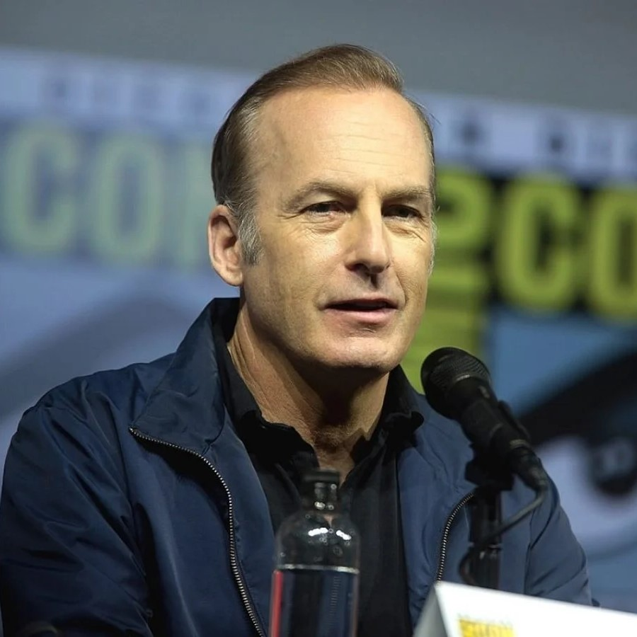
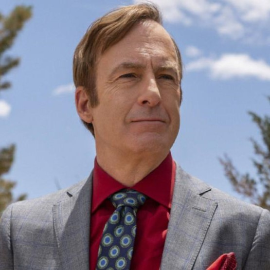

Sobre Mí
Nací en Berwyn, Illinois, y crecí en Naperville, un pueblo cercano. Soy uno de los siete hijos de Barbara y Walter Odenkirk y mi hermano es el guionista de comedia Bill Odenkirk. La batalla de mi padre contra el alcoholismo más tarde influiría mi decisión de de evitar el alcohol casi por completo.
Cuando era pequeño odiaba a Naperville porque se siente como un lugar sin salida. No podía esperar para mudarme a una ciudad y estar rodeado de personas que hicieran cosas emocionantes. Después de terminar mis estudios secundarios, asistí al Columbia College Chicago.
Mi principal influencia como comediante fue Monty Python's Flying Circus, debido a que combina un humor inteligente con un humor simple. Otras influencias son el locutor radial Steve Dahl, SCTV, Let's Get Small de Steve Martin, Woody Allen, The Credibility Gap y Bob and Ray. Cuando tenía catorce años de edad, visité el teatro The Second City, en Chicago.
Ver más

Mis Roles
Guionista: Saturday Night Live (1987-91)
Obra de Teatro: Happy Happy Good Show (1988)
Guionista: Get a Life (1991)
Guionista: The Dennis Miller Show (1991)
Guionista y actor: The Ben Stiller Show (1992)
Guionista: Late Night with Connan O’Brien (1993-1994)
Agente de Protagonista: Larry Sanders Show (1993-1998)
Protagonista: Mr Show with Bob and David (1995-1998)
Papel Secundario: Breaking Bad (2009 - 2014)
Guionista y Productor: Lets Do This! (2011)
Actor: Los Increibles 2, Little Women, The Post,
The Disaster Artist, The Spectacular Now, Nebraska
Protagonista: Better Call Saul (2015 - 2022)
Protagonista: Nobody (2021)
Ver otros